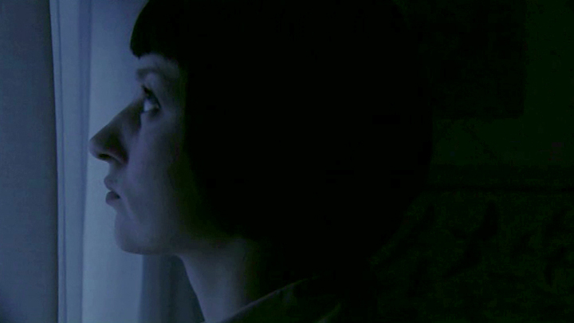

Films & Events
Interiour / Night
(10 min,
2006,
Short Fiction)
One apartment, one night. In thirteen takes the film recounts the role reversal between a mother and her child.
Links
Team
This short fiction was developed in a workshop by Benedek Fliegauf (Golden Leopard for Tejút, Goldener Bär at 62th Berlinale for Just the wind), using his unique method of filmmaking.
Actress Mother
Victoria Deutschmann
Actor Son
Ben Garbisch
Director & Editor
Eva Stotz
Cinematographer
Andràs Petrik
Dramaturgical Advisor
Benedek Fliegauf
Assistant Camera
Olaf Aue
Sounddesigner
Malte Bieler, subsonance
Production
German Film and Television Academy Berlin
Festivals & Awards
- Official Selection 14th CINEMA TOUS ÉCRAN
- Official Selection 9th INT'L FILM FESTIVAL BELGRADE
- Official Selection EUROPEAN SHORT FILM FESTIVAL Massachusetts
- Official Selection Portal Film Festival, Atlanta



To watch the full film or get more information about live events, please send me a message.